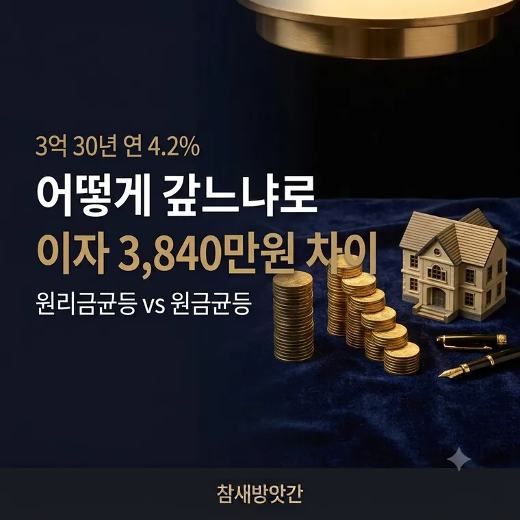

갚는 방식만 달라도 이자가 3,840만원 차이납니다
같은 금액 같은 금리인데 어떻게 갚느냐로 이자가 3,840만원 갈립니다. 대출받을 때 한 번 고르면 되돌리기 어려우니 미리 따져봐야 합니다.

갚는 방식은 세 가지입니다
원리금균등은 매달 내는 돈이 똑같습니다. 처음에는 그 안에서 이자 몫이 크고 원금 몫이 작다가, 시간이 갈수록 원금 몫이 커집니다. 내는 돈은 그대로인데 속 구성이 바뀝니다.
원금균등은 원금을 기간으로 똑같이 나눠 갚습니다. 남은 원금에만 이자가 붙으니 갚을수록 이자가 줄어듭니다. 그래서 매달 내는 돈이 점점 작아집니다.
만기일시는 기간 내내 이자만 내다가 마지막에 원금을 한꺼번에 갚습니다. 원금이 전혀 줄지 않아 이자가 가장 많습니다. 짧게 쓰거나 만기에 목돈이 들어올 때만 씁니다.
3억원 30년으로 비교해 보겠습니다
대출 3억원, 연 4.2%, 30년 기준입니다.
| 구분 | 원리금균등 | 원금균등 |
|---|---|---|
| 첫 달 상환액 | 1,466,790원 | 1,883,333원 |
| 마지막 달 | 1,466,790원 | 836,500원 |
| 총이자 | 약 2억 2,804만원 | 약 1억 8,963만원 |
대신 첫 달에 416,543원을 더 내야 합니다.
초반 몇 년을 버틸 수 있느냐가 갈림길입니다.
원금균등이 싸다는 건 분명합니다. 다만 처음 부담이 41만원 넘게 큽니다. 소득이 빠듯한데 원금균등을 골랐다가 연체가 나면 그게 더 손해입니다.
초반 현금이 돌면 원금균등, 지금 소득이 빠듯하면 원리금균등으로 보시면 됩니다.
왜 이자가 벌어지는가
이자는 남은 원금에만 붙습니다. 그래서 원금을 빨리 줄일수록 이자가 적습니다.
원금균등은 처음부터 원금을 꼬박꼬박 같은 금액으로 깎습니다. 원리금균등은 초반에 내는 돈의 대부분이 이자로 들어가서 원금이 더디게 줄어듭니다.
3억원 30년 원리금균등이면 첫 달 146만원 중 105만원이 이자이고 원금은 41만원뿐입니다. 원금균등은 첫 달부터 원금만 83만원을 갚습니다. 이 차이가 30년 쌓여 3,840만원이 됩니다.
거치기간은 이자를 늘립니다
거치기간은 원금을 갚지 않고 이자만 내는 기간입니다. 처음 부담을 줄이려고 두는 경우가 많습니다.
문제는 그동안 원금이 한 푼도 줄지 않는다는 점입니다. 3억원에 3년 거치를 걸면 그 기간에만 이자가 약 3,780만원 나가는데, 원금은 그대로 3억원입니다.
게다가 거치가 끝나면 남은 27년 안에 원금을 다 갚아야 하니 매달 내는 돈도 더 커집니다. 앞에서 줄인 부담이 뒤로 몰리는 셈입니다.
이자를 아끼는 게 목적이라면 거치기간은 두지 않거나 짧게 잡는 편이 낫습니다.
중도상환으로 비슷한 효과를 냅니다
원리금균등을 골랐어도 방법이 있습니다. 여윳돈이 생길 때마다 원금을 조금씩 갚는 것입니다.
원금을 갚으면 남은 원금이 줄고, 그 즉시 다음 달부터 붙는 이자가 줄어듭니다. 이걸 꾸준히 하면 원금균등과 비슷한 쪽으로 갑니다.
기간 단축 — 월 상환액은 그대로 두고 대출 기간을 줄입니다
금액 감액 — 기간은 그대로 두고 월 상환액을 줄입니다
이자를 가장 많이 아끼는 쪽은 기간 단축입니다.
다만 중도상환수수료를 먼저 확인해야 합니다. 보통 3년이 지나면 면제됩니다. 아끼는 이자가 수수료보다 큰지 따져보고 결정하시면 됩니다.
한 번 정하면 바꾸기 어렵습니다
대출을 받고 나서 상환방식을 바꾸는 것은 대부분 안 됩니다. 바꾸려면 새로 대출을 받아 갈아타는 형태가 됩니다.
그러면 인지세와 근저당 설정비 같은 부대비용이 다시 들고, 기존 대출에 중도상환수수료가 붙을 수도 있습니다.
그래서 처음 고를 때가 중요합니다. 앞으로 3~5년의 소득을 그려보고 정하시기 바랍니다.
자주 묻는 질문
총이자만 보면 원금균등이 유리합니다. 3억원을 연 4.2%로 30년 빌릴 때 총이자가 약 1억 8,963만원으로 원리금균등보다 3,840만원 적습니다. 다만 첫 달 상환액이 약 41만원 더 많아 초기 부담이 큽니다.
거치기간에는 이자만 내고 원금이 줄지 않습니다. 3억원 대출에 3년 거치를 두면 그 기간에만 약 3,780만원의 이자가 나가고, 거치가 끝난 뒤 남은 기간에 원금을 갚아야 해 월 상환액도 커집니다.
대부분 불가능합니다. 바꾸려면 신규 대출로 재계약해야 하며 부대비용과 중도상환수수료가 발생할 수 있습니다. 처음 선택할 때 앞으로의 소득을 고려해 정하는 것이 중요합니다.
총이자를 줄이는 데는 기간 단축이 유리합니다. 월 상환액을 그대로 유지하면서 대출 기간이 짧아지므로 이자가 붙는 기간 자체가 줄어듭니다.